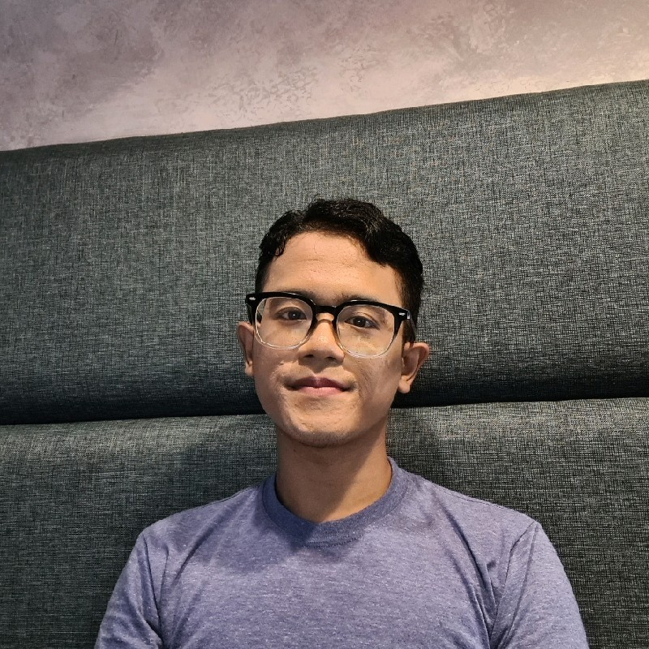

|  |
Zulfa Wijaya
Graduate Student in Metallurgical Engineering, Northeastern University, China An engineer with extensive experience in Building Automation Systems, focusing on control system solutions and maintenance services. Currently researching AI applications in metallurgy. |